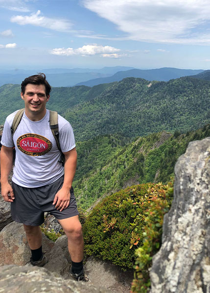

Will Brody
UX Design & Research

My Journey
Hello! I am a UX designer based in Knoxville, Tennessee, with a background in Social media marketing, financial, real estate and automotive industry. Over four years I lived in Israel. From the southern Negev region, to the Upper Galilee bordering Lebanon, but mostly Tel Aviv. I began working for Mindspace, a co-working office space company for freelancers and startups. With my skillsets, I conducted competitor analyses and user research on a global scale. The data collected assisted with the eventual expansion of office spaces in Hamburg, Germany and London, UK Additionally, I organized networking events for clients, while providing tours of the company for potential clients/investors. At this time, I was not familiar with the term UX design. For me, connecting, engaging, and understanding the customer/client has always been a key necessity for the success of a company, product and/or service. Once I learned about UX design, I was working for a payment solutions company called Payoneer, which are headquartered in Petah Tikvah, Israel. At this time, I was a social media marketing manager working with a team on the company’s online presence, image, and user experience issues associated to our product/service. I conducted numerous surveys and interviews with account holders. Eventually I created a project that represented the voice of the customer. I addressed their frustrations and designed solutions for the relevant cases to pass along to the development team. This is when I decided to pursue UX design. As someone who understands the consumer mindset, I focus on designing a solution and unrealized need for a positive and lasting user experience. I’m currently available for both full-time and freelance work in East Tennessee or remotely. Aside from my professional career and interests, I’m also an avid backpacker and off-trail hiker/bushwhacking.
My CVSkills & Tools
Relevant Skills
- User research
- Competitor analyses ( SWOT, UX analyses)
- Audit
- Interaction design
- Usability tests
- Prototyping
- Wireframes
- Information architecture
- Persona’s, user journeys, flows
- Experience strategy
- HTML, CSS
- Javascript
- Branding
- User/customer empathy
Tools I Use
- Adobe XD
- Photoshop
- Indesign
- Adobe Illustrator
- Balsamiq
- Overflow
- Marvel
- UsabilityHub